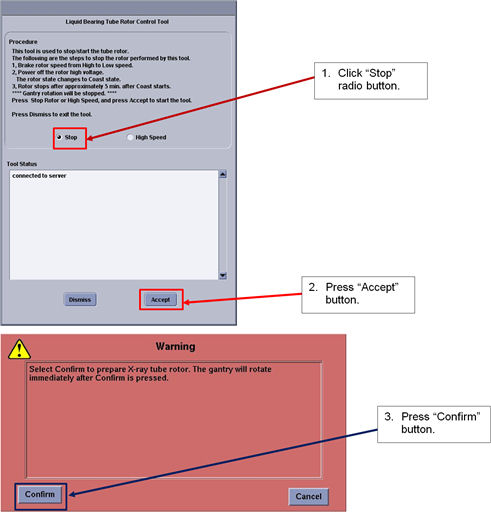
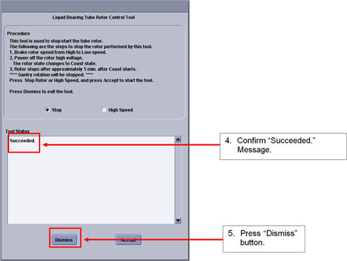

Operating Documentation
Direction 5193574-800, Rev# 22
LightSpeed 7.X Service Methods
Module Version 1.0, Version Date 6/12/15
Operating Documentation |
| Required Persons | Preliminary Reqs | Procedure | Finalization |
|---|---|---|---|
| 1 |
| Last Revised: | June 12, 2015 |
| Condition | Reference | Effectivity |
|---|---|---|
Only trained service personnel should service the GE CT Scanner. | - | - |
Start “Rotor Control Tool” under “Diagnostic” tab from CSD menu.
Check “Stop” radio button and press “Accept” button. Then press “confirm” to rotate Gantry.
Illustration 1: Window - Rotor Control Tool

Confirm that the Tool Status shows “Succeeded” and press “Dismiss” button to close the tool.
Illustration 2: Window - Tool Status

No finalization steps.